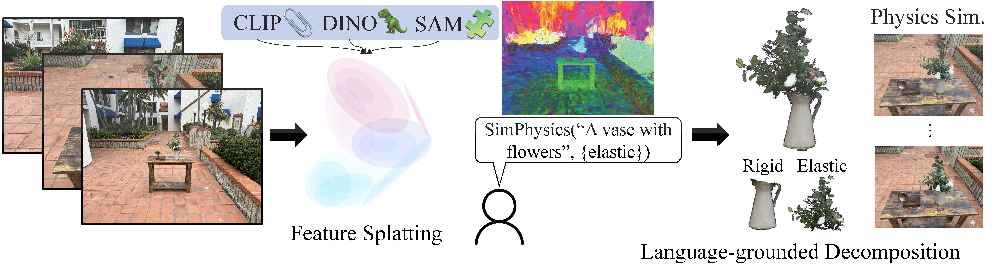
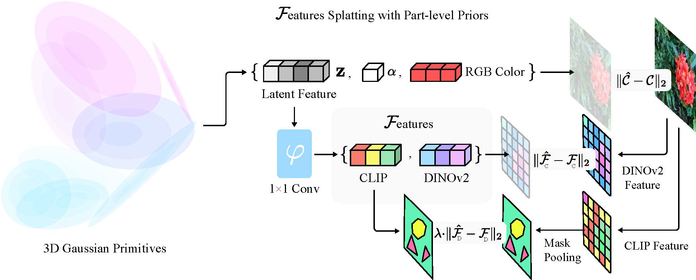
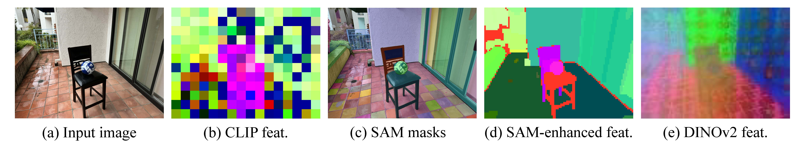
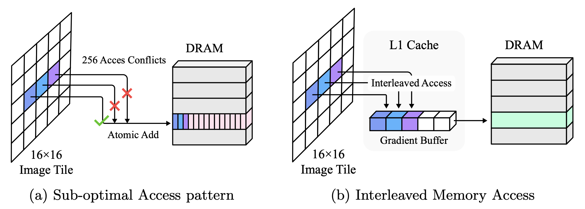
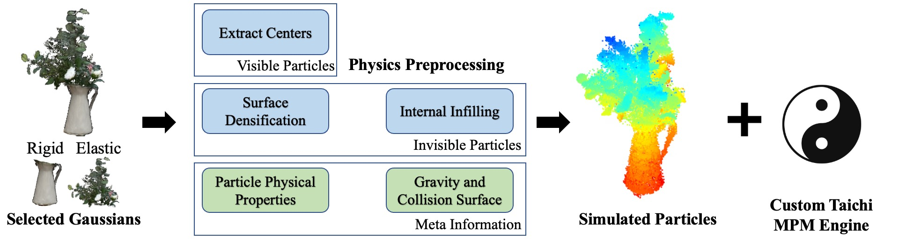
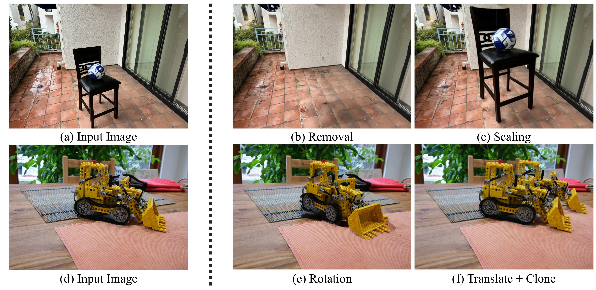

TLDR: Language-grounded gaussian splatting enables physics-based scene editing
Abstract
Scene representations using 3D Gaussian primitives have produced excellent
results in modeling the appearance of static and dynamic 3D scenes. Many
graphics applications, however, demand the ability to manipulate both the
appearance and the physical properties of objects. We introduce
Feature Splatting, an approach that unifies physics-based dynamic scene
synthesis with rich semantics from vision language foundation models that
are grounded by natural language. Our first contribution is a way to distill
high-quality, object-centric vision-language features into 3D Gaussians, that
enables semi-automatic scene decomposition using text queries. Our second
contribution is a way to synthesize physics-based dynamics from an otherwise
static scene using a particle-based simulator, in which material properties
are assigned automatically via text queries. We ablate key techniques used in
this pipeline, to illustrate the challenge and opportunities in using
feature-carrying 3D Gaussians as a unified format for appearance, geometry,
material properties and semantics grounded on natural language.
Language-Driven Physics-Based Scene Synthesis

Feature splatting jointly optimizes for a unified Gaussian representation
for appearance, geometry, and semantics. Feature splatting goes beyond open-vocabulary segmentation to dive
into component-level details to automatically determines physical properties of materials based on features.
Shake a rigid vase with elastic flower stems.
Make a slim standing statue move like jelly.
Turn a lego bulldozer into a pile of sand.
Make a ball fall off from a chair.
Method Overview
Splatting Features onto Gaussians


We fuse features from multiple foundation 2D Vision models.
We train latent features to rasterize both SAM-enhanced CLIP features and DINOv2 features for better quality.
Optimized Feature Rasterization

Feature splatting is engineeringly optimized
to support future Gaussian+feature research.
We implemented custom CUDA kernels for optimized memory access pattern to rasterize high-dimensional features.
MPM-based Physics Simulation

Feature splatting automatically computes
component-level and scene-level information that are turned in to a customized physics engine
based on Taichi for physics simulation.
Applications (besides Physics)
Geometric Editing

Feature splatting implements several editing primitives for scene
editing, such as object removal, scaling, rotation, translation, and cloning.
Tabletop Manipulation
The optimized efficiency
allows feature splatting to support robotics applications.
We demonstrate open-vocabulary pick-and-place by combining feature splatting with GraspNet
on a FR3 arm platform.
BibTeX
@article{qiu-2024-featuresplatting,
title={Language-Driven Physics-Based Scene Synthesis and Editing via Feature Splatting},
author={TBD},
journal={TBD},
year={2024}
}